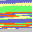

Back to parent
Wissenschaftliche ergebnisse der Schwedischen zoologischen expedition nach dem Kilimandjaro, dem Meru und den umgebenden Massaisteppen Deutsch-Ostafrikas 1905-1906, unter leitung von prof. dr. Yngve Sjöstedt
